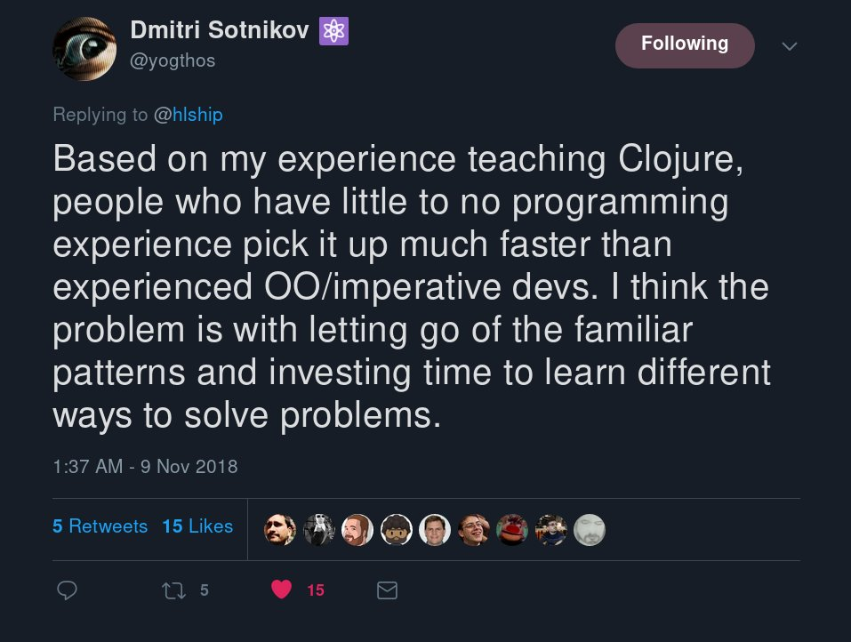

https://clojurians.zulipchat.com/
https://www.reddit.com/r/Clojure/
https://gitter.im/metasoarous/clojure-datascience
"The development of language is part of the development of the personality,
for words are the natural means of expressing thoughts
and establishing understanding between people."
– Maria Montessori
"The only language men ever speak perfectly
is the one they learn in babyhood,
when no one can teach them anything!"
– Maria Montessori

"When a thorn enters the sole of your foot, you have to get another thorn.
You then remove the first thorn with the help of the second.
Afterwards you throwaway both.
Likewise,
after removing the thorn of ignorance with the help of the thorn of knowledge,
you should throwaway the thorns of both knowledge and ignorance."
– The Gospel of Sri Ramakrihna, translated by Swami Nikhilananda, 1942
“The only outwardly recognizable sign of the onset of the sensitive period for language is the child’s smile”
– Maria Montessori, "The Absorbent Mind"
https://github.com/clojure-data-science-course/course-information
"I mentioned 'lightweight data modeling'.
At that point, I often say something like, 'Do you know JSON?'.
After getting acknowledgment, I continue with,
'Well, imagine if you could represent all your data as JSON,
rather than a complex hierarchy of objects and methods,
and the language was designed around
making that kind of data super-easy to work with.'
… It gives a hint of what it feels like to work in Clojure and think in Clojure."
– Mark Engleberg, "Clojure vs Scala", Tuesday, December 24, 2013
https://github.com/mikera/core.matrix/blob/develop/src/main/clojure/clojure/core/matrix/dataset.cljc
https://github.com/cailuno/denisovan
https://github.com/ghl3/dataframe
https://github.com/aria42/koala
https://github.com/ribelo/wombat
https://github.com/whilo/denisovan
https://github.com/cardillo/joinery
https://github.com/joshuaeckroth/clj-ml/
https://github.com/originrose/cortex
https://github.com/hswick/jutsu.ai
https://github.com/behrica/rojure
https://github.com/thi-ng/geom/blob/master/geom-viz/src/index.or
https://github.com/hswick/jutsu
https://github.com/metasoarous/oz
https://github.com/jsa-aerial/saite
https://github.com/jsa-aerial/hanami
geom-viz/src/index.org
https://www.braveclojure.com/clojure-for-the-brave-and-true/
http://viewer.gorilla-repl.org/view.html?source=github&user=lspector&repo=clojinc&path=worksheet.clj